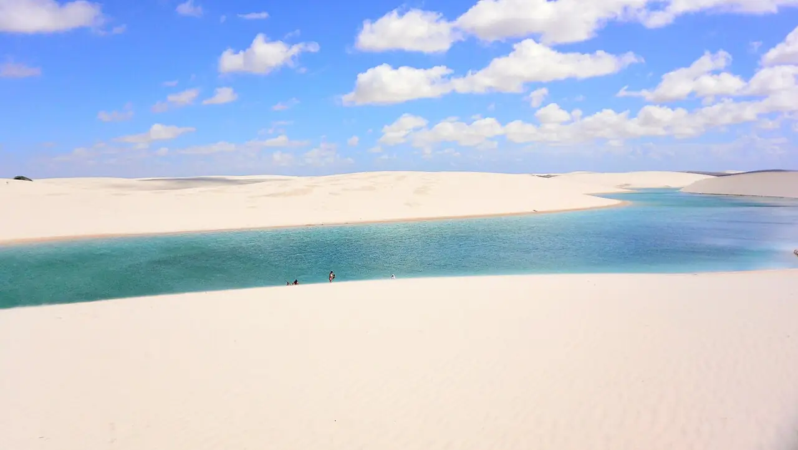

Lagoa Azul — Lençóis Maranhenses
Maranhão, Brésil · baignade

Lagune d’eau de pluie nichée entre les dunes blanches du parc national des Lençóis Maranhenses, près de Barreirinhas. Les lagunes se remplissent pendant la saison des pluies et sont en général à leur plus beau entre juin et septembre.
- Lieu
- Maranhão, Brésil
- Niveau
- Débutant
- Activités
- baignade
- Type d'eau
- lake
- Coordonnées
- -2.66, -42.86 (position approximative du secteur)
Dangers à connaître
- Soleil et chaleur intenses sur les dunes, sans aucune ombre.
- Niveau des lagunes très variable : elles peuvent être presque à sec hors saison.
- Circulation motorisée seulement sur les pistes autorisées du parc.
Le conseil d'Ocean Buddy
Pars avec un guide agréé en 4x4 depuis Barreirinhas, emporte beaucoup d’eau et vise la fin de journée, quand le sable a refroidi.
Ouvrir dans Ocean Buddy Télécharger sur l'App Store
Source : Fiche Ocean Buddy · septembre 2026 · à vérifier localement.